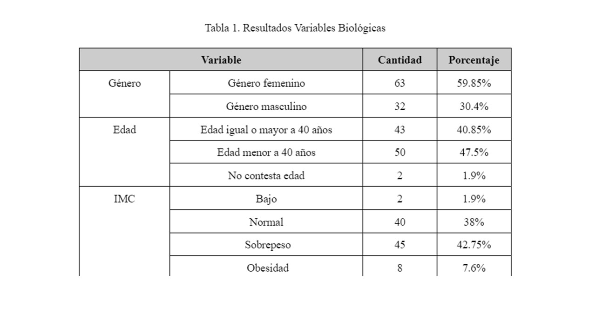

Un programa de vigilancia epidemiológica (PVE) osteomuscular, es aquel que permite una detección temprana de los desordenes musculo-esqueleticos(DME), facilitando una pronta y pertinente intervención del riesgo, garantizando ambientes seguros y saludables, que contribuyan a mejorar la calidad de vida de los trabajadores y hacerlos más productivos.
Objetivos
#Objetivo General
Prevenir la aparición de enfermedades laborales derivadas de la exposición a factores de riesgo biomecánico a nivel laboral y promover su detección temprana y la disminución del impacto a la salud de los trabajadores en la empresa, a través de la identificación, valoración y control de los factores de riesgo.
1Objetivo Especifico
Realizar un diagnóstico a través de la percepción de síntomas musculoesqueléticos en codo y muñeca de los trabajadores.
2Objetivo Especifico
Identificar las tendencias de exposición a factores biomecánicos para clasificarlos según el nivel de riesgo en salud..
3Objetivo Especifico
Sugerir estrategias y medidas de control frente a los factores de riesgo de orden osteomuscular de codo y muñeca.
4Objetivo Especifico
Evaluar las medidas de prevención y control propuestas para generar retroalimentación y mejora del programa de vigilancia epidemiológico.
Preguntas Frecuentes
#¿Que es un PVE Osteomuscular?

#¿Que son las GATISST?
Son las guías de atención integral en seguridad y salud en el trabajo que aplican como herramientas en el ámbito laboral,con la finalidad de brindar apoyo en prevención, vigilancia, diagnóstico e intervención. Aplicado a los DME determinan riesgos derivados de la carga, la postura, la fuerza, el movimiento y el ámbito psicosocial.
#¿Justificación de un PVE Osteomuscular?
Los trastornos musculoesqueléticos son multifactoriales, es decir que son ocasionados por factores psicosociales, físicos, individuales y ocupacionales, por lo que resulta de suma importancia la identificación, monitoreo y seguimiento de los factores de riesgo biomecánico en los lugares de trabajo por medio de la observación continua de la distribución y tendencia de dichos factores y de sus efectos en los trabajadores, para aplicar medidas que mitiguen esta situación, siendo la implementación de un programa de vigilancia epidemiológica la mejor forma de llevarlo a cabo.
#¿Que es el Cuestionario Nórdico?
"Es un cuestionario estandarizado para la detección y análisis de síntomas musculo esqueléticos, aplicable en el contexto de estudios ergonómicos o de salud ocupacional con el fin de detectar la existencia de síntomas iniciales, que todavía no han constituido enfermedad o no han llevado aún a consultar al médico."
Fase diagnóstica
1Población objeto
2Mapa de riesgos de la condición de riesgo(GATISST y OSHA)
3Monitoreo Ambiental(Condiciones de trabajo)
4Monitoreo Biológico(condiciones del trabajador)
5Identificación del riesgo integral
6Incapacidades por enfermedad laboral
7Incapacidades por accidentes de trabajo
8Resultado de encuesta de morbilidad sentidad(Cuestionario Nórdico)
Fase diagnóstica
Medidas de ingeniería(Medio/fuente)

Medidas administrativas(Medio/persona)
Protección personal
Fase de evaluación
1Indicadores de estructura
2Indicadores de proceso
3Indicadores de resultado
Datos Sociodemográficos

Morbilidad sentida

Conclusiones

1La población en estudio se caracterizó por ser mayoritariamente de sexo femenino, con un grupo poblacional entre mayores y menores de 40 años edad muy igualitario, una antigüedad laboral de más de 5 años en más del 50% de la población del estudio. Estos factores pueden influir en la percepción y la prevalencia de los síntomas musculoesqueléticos de codo y muñeca.
2Se identificó la existencia de síntomas musculoesqueléticos de codo y muñeca en el 22,3% de los trabajadores, siendo más frecuentes en el lado derecho del cuerpo. Los síntomas se relacionaron con factores de riesgo biomecánico como posturas forzadas, movimientos repetitivos, fuerza manual, demanda física, jornada laboral de 48 horas a la semana, tiempo mayor a 5 años laborando, y diseño inadecuado del puesto de trabajo.
3Se brindaron recomendaciones de intervención dirigidas a controlar el riesgo biomecánico acordes a las condiciones de trabajo y a la salud de los trabajadores, tales como: realizar pausas activas, capacitar a los trabajadores sobre la prevención de desórdenes musculoesqueléticos y realizar seguimiento médico periódico, investigacion de incidentes y accidentes , así como de establecer prioridades de intervención.
Recomendaciones

1Cuestionario Nórdico
Extender la aplicación de la encuesta de morbilidad sentida a los demás trabajadores de la empresa, para identificar prioridades de intervención por trabajadores y frentes de trabajo.
2Inspecciones
De puestos de trabajo para los trabajadores que presentan sintomatología o tienen diagnóstico de DME en codo y muñeca.
3Capacitaciones
A toda la población expuesta al riesgo de desarrollar DME en codo y muñeca, que abarquen al menos, Higiene postural, manipulación manual de cargas, prevención de lesiones osteomusculares en miembros superiores, actividad física y hábitos de vida saludable, ergonomía en el puesto de trabajo, estiramientos y fortalecimiento muscular.
4Articular
El PVE de codo y muñeca con el Programa de Pausas Activas y orientar actividades desde dicho programa para prevenir la aparición de DME a partir de la disminución de la carga muscular estática y dinámica.
5Seguimiento Médico
A los trabajadores sintomáticos y diagnosticados con DME de codo y muñeca. Así como a los casos de reintegro laboral y/o cumplimiento de recomendaciones médicas, para adaptar las funciones y el puesto de trabajo a las capacidades del trabajador, garantizando su bienestar y rehabilitación integral.
6Investigar IT, AT, EL
Cuyo factor de riesgo haya sido biomecánico y el mecanismo de lesión haya sido sobreesfuerzo, esfuerzo excesivo o falso movimiento en las articulaciones del codo y muñeca. Así como diagnósticos de síndrome del túnel del carpo, tenosinovitis de estiloides radial o epicondilitis medial y lateral, para a partir de ellas, ajustar las formaciones y actividades orientadas a prevenir, controlar y mitigar el riesgo.
7Realizar
Medición, seguimiento y evaluación del PVE de codo y muñeca, para tomar decisiones que garanticen la mejora continua del programa.